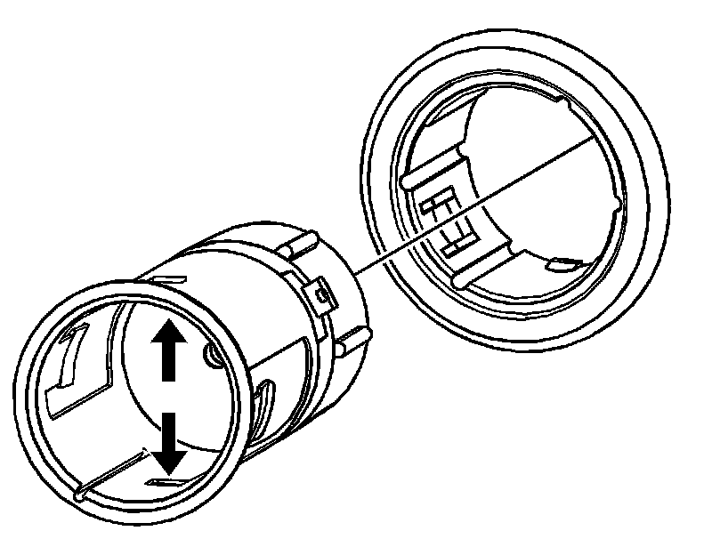
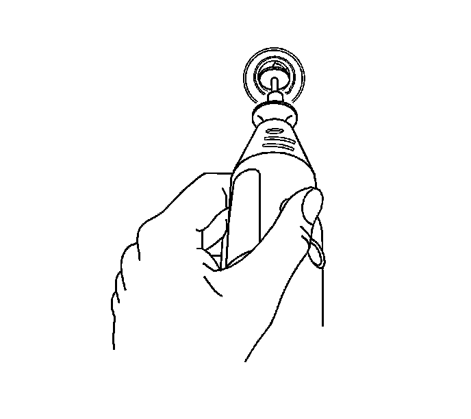
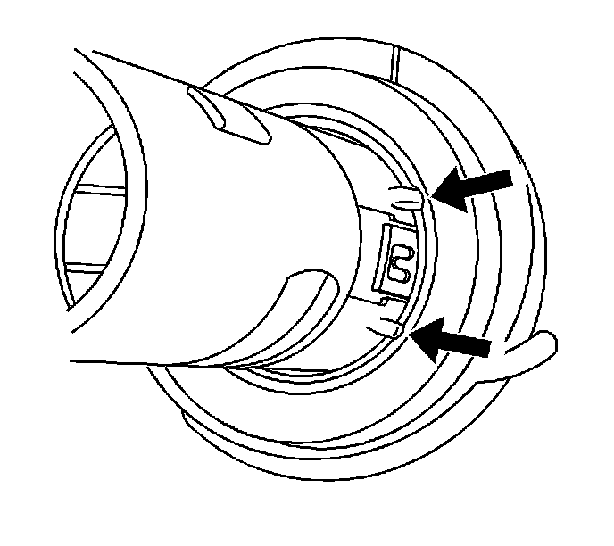

Auxiliary Power Outlet: Service and Repair
CIGAR LIGHTER RECEPTACLE OR 12-VOLT ACCESSORY POWER RECEPTACLE REPLACEMENT
TOOLS REQUIRED
J 42059 Cigar Lighter Socket Remover
REMOVAL PROCEDURE

1. Remove the auxiliary power outlet fuse from the fuse block.
2. Remove the receptacle:
1. Look into the receptacle. There are two 3 mm (0.11 in) tab windows 12 mm (0.47 in) from the front of the receptacle. The J 42059 pushes the plastic latches from these tab windows and the receptacle can be pulled straight out.
2. Place one side of the "T" portion of the J 42059 into the tab window. The J 42059 will not fit straight into the receptacle. Angle the J 42059 slightly for insertion into the receptacle.
3. Insert the other side of the "T" into the opposite tab window.You must move the J 42059 handle toward horizontal to engage the other tab window.
4. Use the J 42059 to pull the receptacle straight out.

3. If J 42059 tool fails to release the lighter socket from the retainer, perform the following alternate method:
1. Insert a small grinding tool with a cutoff wheel into the socket.
2. Remove the plastic latches in the 3 mm (0.11 in) square windows.
3. Use the J 42059 as directed above to remove the socket.
INSTALLATION PROCEDURE

1. Route the connector through the retainer. Align the accessory power receptacle retainer to the slot in the opening.
2. Install the retainer by pressing into place fully seated.
3. Connect the electrical connector to the receptacle.
4. Align the tabs on the receptacle to the slots in the retainer. Install the accessory power receptacle by pressing into place until fully seated.
5. Install the accessory power receptacle fuse.